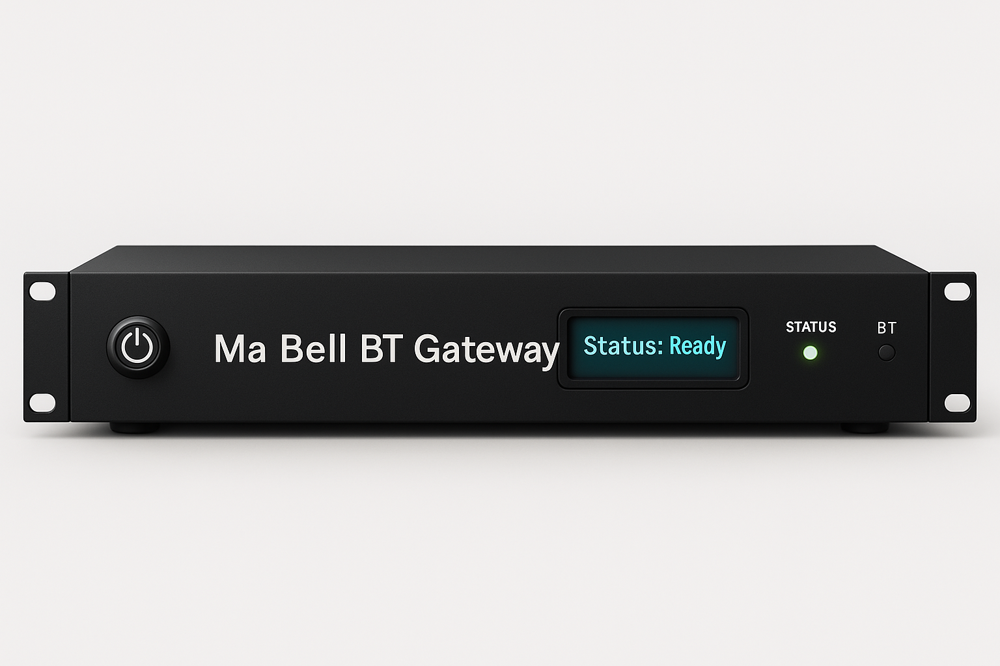

ESP32 Ma Bell Bluetooth Gateway
The “Ma Bell” Bluetooth Gateway is a DIY embedded project that brings the nostalgia of 1970s landline telephony into the modern wireless era by creating a functional mobile phone analog gateway connected via Bluetooth. Designed to work seamlessly with any vintage telephone, this project replicates the authentic experience of 20th-century landline service, complete with dial tone simulation, pulse dialing, and proper ring delays.
{kind=link}
Powered by an ESP32 Microcontroller, the system bridges the gap between classic analog phones and modern mobile networks, enabling both inbound and outbound calls via Bluetooth. When the handset is lifted, the dial illuminates, and a simulated dial tone plays, allowing the user to dial out just as they would in a traditional landline system. Incoming Bluetooth calls trigger the ringer, complete with the authentic delay before answering, and if the phone is left off the hook, a reorder tone plays—just like in the old days.
By blending retro hardware with modern embedded technology, this project faithfully recreates the full Ma Bell experience, preserving a piece of telephony history in a functional and interactive way. Whether for nostalgia, experimentation, or simply the joy of reviving vintage hardware, the Ma Bell Emulator allows users to relive the golden age of landline communication in a world dominated by mobile devices.